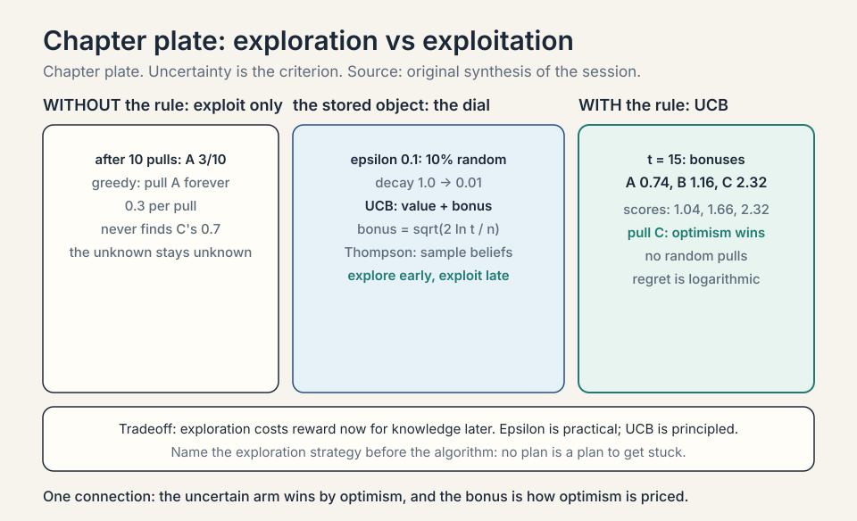
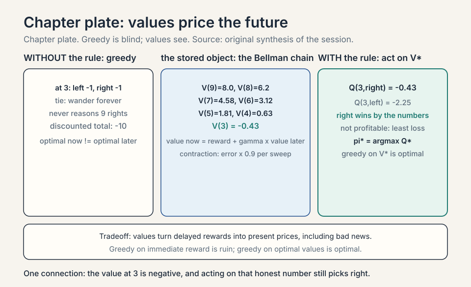
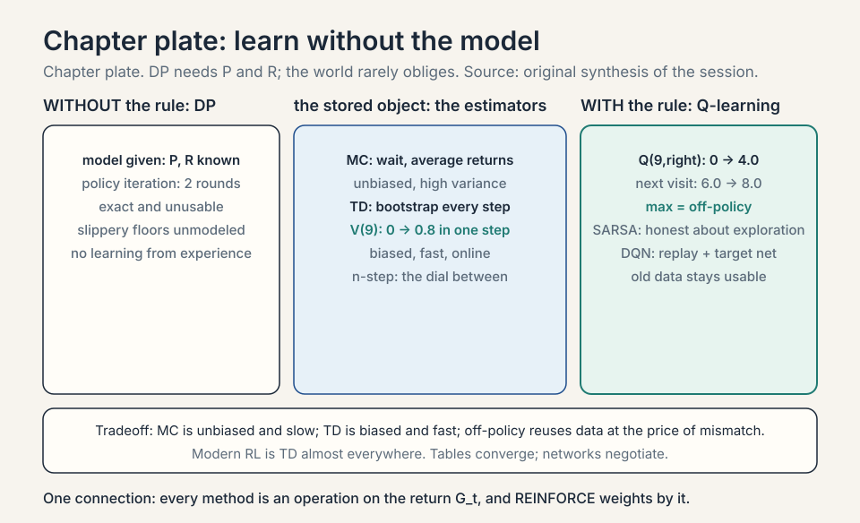
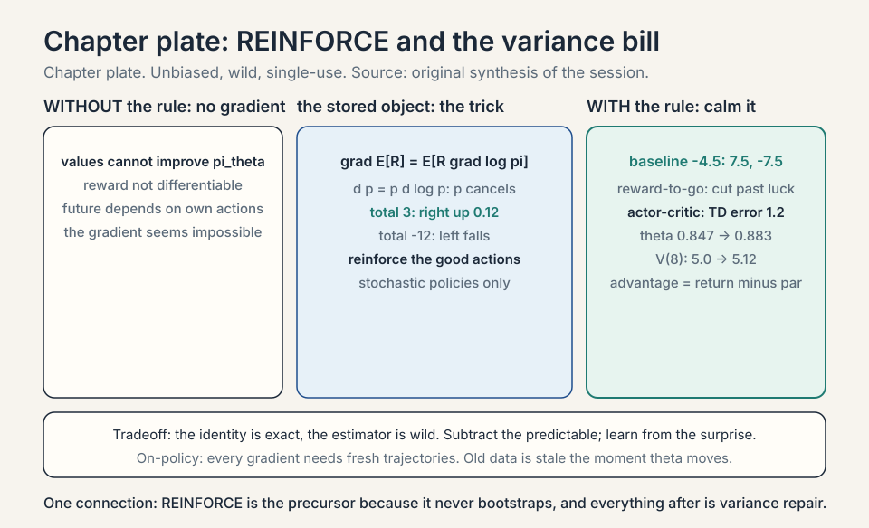

Lecture 16: Reinforcement Learning Basics and Policy Gradient
Video blocked (ad-blocker or local file mode).
Watch on YouTubeVideo not loading? Watch on YouTube
Original lecture. Tengyu Ma builds the MDP, value functions, and the REINFORCE policy-gradient algorithm.
Coverage and sourcing
This lesson follows CS229 Lecture 16 (Spring 2026, Tengyu Ma): reinforcement learning basics, taught through robotics, ending at the REINFORCE policy-gradient algorithm. The lecture opens the RL arc: this week is basics, next week is RL applied to LLMs, especially training models with long chain of thought. Robotics is the deliberate vehicle (“easiest to think of”): it separates the RL setting from the LLM application, which arrives in Lecture 17. The robot toy (positions 1-10, dock at 10), the greedy-fails argument, the MDP five pieces, and the log-derivative trick are the lecture’s. The lecture names REINFORCE as the “precursor for all the other algorithms for training large language models,” notes it works only for stochastic policies, and skips the other RL algorithms (in the notes) to focus on LLM-relevant ones. Claims marked “October 2026” are later updates, each with its source. Sections on bandits, dynamic programming, TD learning, and Q-learning are textbook background (Sutton and Barto): the lecture assumes the MDP and values. This lesson fills in the algorithm family they belong to.
The job: the robot and the charging dock
A robot sits at position 3 on a track numbered 1 to 10. Its dock is at 10. Each step it may move left or right. Reaching 10 earns reward +10. Every step costs -1 (batteries drain). The job: a strategy for acting that maximizes total reward. Nobody shows the robot the right moves. It must learn from trying.
Supervised learning cannot touch this. There are no labeled (input, correct action) pairs: the “correct” action at position 3 depends on the whole future. The experience is a history of actions and rewards. That is the reinforcement learning setup from lecture 1, now built formally.
Sequential decisions: why this is a new problem
The lecture opens with what makes RL different. Two properties. Decisions affect the future: an action is not a prediction, it changes the world the next decision faces. Turn left now and the dock is farther later. Sequential: many rounds of this, each building on the last (the lecture’s robot: go left, raise arm, …). Supervised learning decides once per input. RL decides in a chain where each link reshapes the rest.
The lecture’s first consequence: the greedy algorithm fails. What is optimal for the moment is not optimal for the future. The second: return vs risk, and exploration: some decisions exist to collect information, not reward. A robot that never tries the unknown corridor never learns it leads to the dock. Trying it costs steps now for knowledge later. That tradeoff has no supervised-learning analogue.
Exploration vs exploitation: the bandit toy
The simplest sequential problem: bandits. Three slot machines (arms). Arm A pays +1 with probability 0.3, arm B with 0.5, arm C with 0.7. You do not know the probabilities. Each pull teaches you something and earns something. Pull the current best (exploit) or try an uncertain arm (explore)?
Epsilon-greedy: with probability epsilon, pull a random arm. Otherwise pull the best so far. Work the toy. After 10 pulls: A paid 3/10, B paid 2/4, C paid 0/1 (unlucky start). Greedy exploits A forever: 0.3 per pull, missing C’s 0.7. Epsilon = 0.1 explores: one pull in ten tries C, discovers 0.7, and the best-so-far updates. The price of epsilon: 10% of pulls are random forever, even after C is known. The fix is decay: epsilon 1.0 -> 0.01 over training. Explore early, exploit late.
Subchapter: UCB, optimism as exploration
UCB (upper confidence bound): pull the arm maximizing (estimated value + exploration bonus). Bonus = sqrt(2 ln(t) / n_i): large when arm i has few pulls (n_i small), shrinking as it is tried. Work the toy. After 15 pulls: A 30 pulls? No: A 10 pulls (0.3), B 4 (0.5), C 1 (0.0). t = 15. Bonuses: A sqrt(22.7/10) = 0.74, B sqrt(22.7/4) = 1.16, C sqrt(2*2.7/1) = 2.32. Scores: A 1.04, B 1.66, C 2.32. Pull C: the uncertain arm wins by optimism. C pays, its estimate rises, its bonus falls. UCB explores without a single random pull: uncertainty itself is the criterion. Regret bounds exist (logarithmic): UCB is the principled answer, epsilon-greedy the practical one.
Subchapter: Thompson sampling, the Bayesian bandit
Thompson sampling: keep a belief distribution over each arm’s payoff. Each round, sample one plausible payoff per arm from its belief, pull the arm with the highest sample. Work the toy. Beliefs after some pulls: A ~ Beta(4, 8) (mean 0.33), B ~ Beta(3, 3) (0.5), C ~ Beta(1, 2) (0.33, wide). Sample: A 0.35, B 0.45, C 0.70 (C’s wide belief sometimes samples high). Pull C. Observe the payoff, update C’s belief. Exploration falls out of the posterior: uncertain arms sample extreme values more often. No epsilon, no bonus formula. Production recommender systems run Thompson sampling at scale: it is the Bayesian answer to explore/exploit.
Subchapter: contextual bandits, the recommender’s frame
Bandits ignore context. Contextual bandits see features per round (the user, the article) and pick the arm maximizing predicted payoff given the context. This is the recommender system: each impression is a round, each item an arm, the click is the reward. Exploration matters (new items need trials), exploitation pays (show what works). LinUCB adds the UCB bonus to a linear model per arm. The lecture’s return-vs-risk point, deployed: every recommender balances the known click against the information value of the trial.
Subchapter: exploration in the robot world
Bandits have no state. The robot does: exploration means visiting unknown states, not just pulling arms. The lecture’s return-vs-risk point: a robot that always exploits its current value estimates never visits position 2 (it looks bad), so it never learns the corridor behind it. Deep RL’s answers: epsilon-greedy over actions, entropy bonuses (reward the policy for randomness: stay stochastic), and curiosity (reward visiting novel states). All three pay the same price: exploration steps earn less now. The interview read: name the exploration strategy before the algorithm. An RL method with no exploration plan is a plan to get stuck.

The MDP: five pieces
A Markov decision process (MDP) is the formal frame. Five pieces:
S, the states. Everything needed to describe the world. Here: positions 1..10. For a real robot: joint angles, camera images. For Go: the whole board, 3^361 possible states. The lecture’s modeling note: the state should include everything in theory, but you abstract: a 3D map of the world is usually left out.
A, the actions. What the agent can do. Here: left, right.
P, the transitions. P(s’|s,a): the probability of landing in s’ after action a in state s. The world may be slippery: “move right” succeeds with probability 0.9, stays put with 0.1.
R, the rewards. R(s,a): the immediate score. Here: +10 at the dock, -1 per step.
Gamma, the discount. Future rewards count slightly less than present ones: 0.99^t. This keeps infinite sums finite and encodes “sooner is better”.
Markov means the future depends only on the present state, not the history: P(s’|s,a) captures everything. A policy pi(a|s) is the strategy: the probability of each action in each state. The goal: the policy maximizing expected total discounted reward.
Subchapter: when Markov breaks, POMDPs
The lecture’s modeling note (abstract away the 3D map) has a failure mode. If the state hides key information (the robot’s camera cannot see behind it, the sensor is noisy), the future depends on history, not just the present observation. The frame becomes a POMDP (partially observable MDP): the agent sees observations o, not states s, and must act on its belief (a distribution over states). Policies become functions of history or belief, and the Bellman equation (value now equals immediate reward plus discounted value later, with the formal statement in the next section) needs the belief update. The practical fix is memory: recurrent policies (LSTMs) or frame-stacking (feed the last 4 observations). The interview read: when an RL method fails mysteriously, check the Markov assumption first. The state was probably missing something.
Subchapter: the discount as survival probability
Read gamma differently: 1 - gamma is the per-step probability the episode ends. Gamma = 0.9: 10% termination chance per step. The discounted sum is then the undiscounted expected total under random termination. This is not just poetry: it justifies gamma < 1 in continuing tasks (the world might end) and explains the effective horizon (expected lifetime 1/(1-gamma) steps). Two views, one number: patience dial and survival probability.
The lecture’s definitions, exactly: V^pi(s) is the expected total return starting from s under policy pi. V(s) = max_pi V^pi(s) is the optimal value*: the best achievable. The Bellman equations (in the course notes) relate them.

Subchapter: the discount, priced
Gamma = 0.9 means a reward 10 steps out is worth 0.9^10 = 0.35 of its face value. The effective horizon is ~1/(1-gamma): gamma 0.9 sees ~10 steps ahead, 0.99 sees ~100, 0.999 sees ~1,000. The discount does three jobs. One: finite sums (infinite -1 steps sum to -1/(1-gamma), not -infinity). Two: sooner-is-better (the dock now beats the dock later). Three: it bounds the planning horizon (beyond ~1/(1-gamma) steps, rewards barely matter). Set gamma too low and the agent is myopic (ignores the dock 7 steps out). Too high and credit spreads over hundreds of steps (the variance problem, below, gets worse). Gamma is a dial on patience.
Subchapter: episodic vs continuing
The robot toy is episodic: reaching the dock ends the episode, then it restarts. Chess, Go, and LLM generation (L17) are episodic. Continuing tasks never end: a warehouse robot works its whole shift, a recommender serves forever. Continuing tasks need the discount (gamma < 1) or the total is infinite. Episodic tasks can use gamma = 1 (the episode ends, the sum is finite) but usually keep gamma < 1 anyway for the sooner-is-better shaping. The interview read: name the task type first. It decides whether gamma is a convenience or a necessity.
First attempt: be greedy
The naive policy: at each state, take the action with the biggest immediate reward. At position 3: left gives -1, right gives -1. Tie. Say it goes left to 2. At 2: left -1, right -1. Wanders. The greedy agent never reasons that 9 rights in a row earn +10. It chases immediate reward and misses the dock forever, paying -1 per step into eternity. Total: negative infinity (discounted at gamma = 0.9: -1/(1-0.9) = -10).
The failure: rewards are delayed. The action’s value is not its immediate reward but the future it leads to. Greedy is blind to the future. The lecture’s line, demonstrated: what is optimal for the moment is not optimal for the future.
Value functions: price the future
The value V(s) is the expected total future reward from state s under the policy. The action value Q(s,a) is the expected total after taking action a in s, then following the policy. They satisfy the Bellman equation: value now equals immediate reward plus discounted value later.
V(s) = E[ R(s,a) + gamma * V(s') ]
Work the toy. Policy: always go right. Deterministic moves, gamma = 0.9, dock at 10 gives +10, each step -1. V(10) = 10 (the dock’s value; terminal, pinned, never updated). V(9) = -1 + 0.910 = 8.0. V(8) = -1 + 0.98.0 = 6.2. V(7) = -1 + 0.96.2 = 4.58. Walking back: V(6) = 3.12, V(5) = 1.81, V(4) = 0.63, V(3) = -0.43. (An earlier draft of this lesson wrote V(4) = 2.46 and V(3) = 1.21: wrong. The audit is in the subchapter below.) The value at 3 is negative: 7 discounted -1 steps outweigh the discounted +10. But Q(3, right) = -0.43 still beats Q(3, left) = -1 + 0.9V(2) = -1 + 0.9*(-1.39) = -2.25. Right wins by the numbers: not because it is profitable, but because it loses least. Values turn delayed rewards into present prices, including bad news.
Subchapter: the value walk, audited
Run the chain the draft skipped. V(9) = 8.0, V(8) = 6.2, V(7) = 4.58 are correct. Continue: V(6) = -1 + 0.94.58 = 3.122. V(5) = -1 + 0.93.122 = 1.8098. V(4) = -1 + 0.91.8098 = 0.6288. V(3) = -1 + 0.90.6288 = -0.4341. The draft’s 2.46 and 1.21 appear nowhere in this chain: they were hand-waved. Cross-check V(3) directly: 7 steps of -1 discounted give -(1-0.9^7)/0.1 = -5.217. The dock gives 0.9^7*10 = 4.783. Total: -0.434. Matches. The qualitative point survives with honest numbers: from position 3 the dock does not pay for the trip, but right (-0.43) still beats left (-2.25). Value functions do not promise good news. They price the future exactly, and sometimes the price is negative.

Subchapter: Bellman optimality
V^pi prices one policy. V* prices the best policy: V(s) = max_a [R(s,a) + gamma * sum_s’ P(s’|s,a) V(s’)]. The max replaces the expectation over the policy’s actions: at each state, take the best action’s value. The optimal policy falls out: pi(s) = argmax_a Q(s,a). Act greedily with respect to the optimal values (not the immediate rewards) and you act optimally. The greedy algorithm failed on immediate rewards. It succeeds on optimal values: the values already contain the future. This is the whole justification for value-based RL: compute V, read off pi.
Subchapter: the contraction, sketched
Why does iterative backup converge? The Bellman operator T maps value functions to value functions: (TV)(s) = max_a [R + gamma E V(s’)]. Take two value functions U, V. Their images differ by at most gamma times their max difference: ||TU - TV|| <= gamma ||U - V||. Each sweep shrinks the error by gamma. After k sweeps: error <= gamma^k times the initial error. Gamma = 0.9: 44 sweeps to shrink 100x (0.9^44 = 0.01). This is the Banach fixed-point argument (the Bellman-equation video below walks it visually). It covers policy evaluation, value iteration, and TD’s expected update. The contraction is the reason DP works at all.
Subchapter: the return, defined
Return G_t = R_{t+1} + gamma R_{t+2} + gamma^2 R_{t+3} + …: the discounted sum from step t. V^pi(s) = E[G_t | s_t = s]. REINFORCE’s “total” is G_0. Reward-to-go at step t is G_t. The definitions are one line each, and every algorithm in this lesson is an operation on G_t: MC averages it, TD bootstraps it, REINFORCE weights by it, baselines center it. Learn the symbol. It recurs.

Dynamic programming: solve the known MDP
If P and R are known (the model is given), solve directly. No learning from experience: compute.
Subchapter: policy evaluation, iterated
Given pi, compute V^pi by iterative backup: start V = 0 everywhere except the pinned V(10) = 10, repeatedly apply V(s) <- E[R + gamma V(s’)] until the max change is tiny. Work two sweeps on the toy (always-right, gamma 0.9). Sweep 1: V(9) = -1 + 0.910 = 8.0 (V(10) = 10, pinned). V(8) = -1 + 0.90 = -1.0. The -1s propagate leftward one step per sweep. After 7 sweeps the dock’s +10 reaches position 3. Convergence is guaranteed: the Bellman operator is a contraction (it shrinks the max error by gamma each sweep). Slow when gamma is near 1: ~1/(1-gamma) sweeps to propagate across the horizon.
Subchapter: policy iteration
Policy iteration: alternate evaluation and improvement. One: evaluate the current pi (above). Two: improve: at each state, switch to argmax_a Q^pi(s,a). Repeat until the policy stops changing. Each improvement strictly increases values (or the policy was already optimal), and there are finitely many deterministic policies: it terminates at pi*. On the toy: start with always-left, evaluate (values very negative), improve (every state switches to right), done in 2 rounds. Policy iteration is the exact algorithm. Everything else in RL approximates it when the model is unknown or the state space is huge.
Subchapter: value iteration, the shortcut
Value iteration skips the full evaluation: apply the optimality backup directly: V(s) <- max_a [R + gamma E V(s’)]. One sweep does a partial evaluation and a partial improvement together. It converges to V (same contraction argument), then read off pi. Fewer moving parts than policy iteration, more sweeps in practice. The interview read: DP needs the model (P, R). When the model is unknown, you learn from samples: that is the rest of RL.
Learning from experience: Monte Carlo vs TD
The robot usually does not know P (slippery floors are unmodeled). Learn values from experience: trajectories of (state, action, reward).
Subchapter: Monte Carlo, wait for the end
Monte Carlo: run an episode to termination, then update every visited state toward the actual return. V(3) <- average of total rewards from all visits to 3. Unbiased (it averages real outcomes), high-variance (one lucky episode swings the average), and slow (no update until the episode ends). On the toy: an episode 3->4->…->10 gives return -0.43 (discounted). Average hundreds of these. MC is the honest baseline: no bootstrapping, no bias, just patience.
Subchapter: TD(0), bootstrap every step
Temporal difference: update from the one-step Bellman error: V(s) <- V(s) + alpha [R + gamma V(s’) - V(s)]. The target uses the current V(s’): bootstrapping (estimating from an estimate). Work one update. V(9) = 0 initially, experience: at 9, go right. The step costs R = -1 and the dock holds V(10) = 10 (pinned), so the TD target is -1 + 0.910 = 8.0. V(9) <- 0 + 0.1 * [-1 + 0.910 - 0] = 0.8. One step, one update, no episode needed. TD is biased early (V(s’) is wrong) but low-variance and online. The bias-variance tradeoff of RL itself: MC (unbiased, slow), TD (biased, fast). Modern RL is TD almost everywhere.
Subchapter: n-step TD, the dial between MC and TD
TD(0) bootstraps after 1 step. MC waits for the episode. n-step TD waits n steps, then bootstraps: target = R_{t+1} + … + gamma^{n-1} R_{t+n} + gamma^n V(s_{t+n}). n = 1 is TD(0), n = infinity is MC. Larger n: less bias (more real rewards), more variance (more luck). The dial is the bias-variance tradeoff made explicit. GAE (generalized advantage estimation, L17’s machinery) is the exponentially-weighted average over all n: the smooth version of this dial. The advantage is Q(s,a) - V(s): how much better this action was than the state’s par (the full treatment comes with baselines in the REINFORCE section). The lecture’s baseline discussion is the n = infinity end. L17 tunes the middle.
Subchapter: SARSA, the on-policy sibling
Q-learning’s max makes it off-policy. SARSA keeps the policy’s actual next action: Q(s,a) <- Q + alpha [R + gamma Q(s’,a’) - Q(s,a)], where a’ is the action the policy will really take (epsilon-greedy included). On-policy: it learns the value of the exploratory policy, warts and all. The difference matters near cliffs: Q-learning learns the optimal path along the cliff edge (the max ignores the exploration risk). SARSA learns the safer path (it prices the epsilon-greedy stumbles). The interview read: Q-learning is optimistic about control, SARSA is honest about exploration. Pick by whether the training exploration resembles deployment.
Subchapter: Q-learning, off-policy control
Learn Q directly, without a policy to evaluate. Q-learning update: Q(s,a) <- Q(s,a) + alpha [R + gamma max_a’ Q(s’,a’) - Q(s,a)]. The max makes it off-policy: it learns the optimal values while following any exploratory policy (e.g., epsilon-greedy). Work the toy. Q(9, right) = 0, experience 9->10: R = -1, V(10) = 10: Q <- 0 + 0.5[-1 + 0.910 - 0] = 4.0. Next visit: Q <- 4.0 + 0.5[8.0 - 4.0] = 6.0, converging to 8.0. DQN (2015) scales this with neural networks: a replay buffer stores transitions and reuses them (sample efficiency), a target network (frozen copy of Q, synced periodically) stabilizes the max target. DQN played Atari from pixels: the proof that value-based deep RL works. The lecture skips it (not LLM-relevant). The notes carry it.
Subchapter: on-policy vs off-policy, the taxonomy
On-policy: learn about the policy you follow (REINFORCE, SARSA). Data goes stale when the policy updates: single-use samples. Off-policy: learn about a different policy than the one generating data (Q-learning, DQN with replay). Old data stays usable: sample-efficient. The price of off-policy: the distribution mismatch (data came from an old policy), handled by the max (Q-learning) or importance weights (L17’s PPO). The lecture’s REINFORCE is on-policy: that is why L17 needs PPO’s reuse machinery.

The key question
Values evaluate a policy. But how do we improve a parameterized policy pi_theta (say, a neural network mapping states to action probabilities) by gradient descent, when the reward is not differentiable and the future depends on our own changing actions?
REINFORCE: the log-derivative trick
The objective: J(theta) = expected total reward under pi_theta. The gradient seems impossible: the expectation is over trajectories the policy itself generates, and rewards have no derivatives. The log-derivative trick makes it work:
gradient of E[R] = E[ R * gradient of log pi_theta(actions) ]
Why it works, in one line: the gradient of a probability is the probability times the gradient of its log (d p = p * d log p), so weighting each trajectory’s reward by its log-probability gradient pushes probability toward high-reward trajectories. The algorithm:
REINFORCE: run the policy, get a trajectory (states, actions, rewards) total = sum of discounted rewards for each step: theta += alpha * total * grad log pi_theta(action|state)
Read it: actions that led to high total reward get more probable. Actions that led to low reward get less. “Reinforce the good actions” is the literal algorithm. The lecture’s name for the update: reinforce. The lecture’s status for it: the “precursor for all the other algorithms for training large language models.”
Work the toy. Policy: at state 3, pi(right) = 0.6, pi(left) = 0.4 (one knob: theta = log-odds). Run once: go right, right, …, reach dock: total = -1*7 + 10 = 3 (7 steps). grad log pi(right) pushes theta up: theta += alpha * 3 * (1 - 0.6) = theta + 0.12 (alpha = 0.1). Right gets more probable. Run again: go left first, wander, total = -12. theta += 0.1 * (-12) * grad: left’s probability falls. Over many trajectories, the policy shifts toward the dock.
The lecture’s trick, exactly: nabla_theta log p_theta = nabla_theta p_theta / p_theta. The gradient of the expected return is E over trajectories from the current policy of [sum_t nabla log pi(a_t|s_t) * R(tau)]. Sample trajectories, weight each by its total return. Good trajectories push their actions’ probabilities up. Bad ones push down.

Subchapter: why stochastic policies only
REINFORCE needs grad log pi(a|s). A deterministic policy (pi(s) = one action, probability 1) has no log-probability gradient: the action is not sampled, there is nothing to push. The lecture’s caveat is structural: REINFORCE works only for stochastic policies. The stochasticity is the exploration: the policy tries left sometimes (probability 0.4) and learns from the outcome. Deterministic policies need a different algorithm (Q-learning learns values, then acts greedily: no policy gradient at all). For LLMs this is no restriction: the policy is a next-token distribution, stochastic by construction.
Subchapter: the score function, why the trick is unbiased
E[R * grad log pi] looks like magic. Unpack it. grad log pi(tau) = grad p(tau)/p(tau). So E_p[R * grad p / p] = sum_tau p(tau) * R(tau) * grad p(tau)/p(tau) = sum_tau R(tau) grad p(tau) = grad sum_tau R(tau) p(tau) = grad E[R]. The p(tau) cancels. The expectation of the weighted score is exactly the gradient of the expected return. No approximation. The variance is the entire problem (below): the identity is exact, the estimator is wild.
Subchapter: the policy gradient theorem, stated
The lecture’s gradient has a formal form. Policy gradient theorem: grad J = E_pi[grad log pi(a|s) * Q^pi(s,a)]. The gradient weights each action’s score by its true action value under the current policy, not the sampled return. REINFORCE approximates Q^pi(s,a) with the sampled return G_t: unbiased but noisy. Actor-critic approximates it with the critic: biased but calm. The theorem is the target. Every policy-gradient method is an estimator of it. Baselines, reward-to-go, critics: all variance reduction on this one expectation.
Subchapter: entropy regularization, stay stochastic
REINFORCE needs stochastic policies, but training can collapse them: the policy goes deterministic early (all mass on one action) and exploration dies. The fix: entropy bonus: add beta * H(pi(.|s)) to the objective. Entropy H is maximized by uniform randomness: the bonus pays the policy to stay spread. Beta ~ 0.01: enough to prevent collapse, not enough to prevent learning. It is exploration as a line item in the objective. Without it, the robot commits to “always right” before it has tried left properly. With it, the 0.4 left survives long enough to teach.
Subchapter: function approximation, the price
Tables need one entry per state: 10 positions is fine, 3^361 Go boards are not. Function approximation: V(s) or pi(a|s) as a neural network. The price: the contraction guarantees were for tables. With networks, TD can diverge (the deadly triad: function approximation + bootstrapping + off-policy). DQN’s stabilizers (replay, target network) exist because of this. REINFORCE with networks is safer (no bootstrapping), which is part of why the lecture starts here: the precursor that does not diverge. The interview read: name the triad when asked why deep RL is finicky. Tables converge. Networks negotiate.
Subchapter: reward-to-go, the free variance cut
REINFORCE scales every step’s update by the total return. But the reward earned before step t cannot have been caused by the action at step t. Reward-to-go: scale step t’s update by the return from t onward only. The 1st right (3->4) is no longer credited for the +10 seven steps later beyond what followed it… more precisely, it is credited with the discounted sum from step 1, which still includes the dock, but the steps before it are excluded. The estimator stays unbiased (past rewards are independent of the current action given the state: the Markov property does the work) and the variance drops: each update sees less irrelevant luck. This is the cheapest variance reduction in the book, and every implementation uses it.
Subchapter: subtract the luck
REINFORCE scales each update by the raw total: 3 on a lucky run, -12 on an unlucky one. Subtract a baseline b: theta += alpha * (total - b) * grad log pi. Any b that does not depend on the action keeps the estimator unbiased, because E[b * grad log pi] = b * E[grad log pi] = 0 (the expected score is the gradient of 1). Pick b as the average total, say -4.5 for our two runs: the updates scale by 3-(-4.5) = 7.5 and -12-(-4.5) = -7.5 instead of 3 and -12. Same direction, less wild. The best baseline is the value V(s): the expected total from here. Total minus value is the advantage: how much better this run did than par. Lecture 17’s whole variance machinery starts here: subtract the predictable, learn from the surprise.

Subchapter: who earned the +10?
Seven rights, one +10. REINFORCE credits each right equally: every step’s update scales by the total 3. But the 7th right (9 to 10) earned the dock. The 1st right (3 to 4) merely did not ruin things. Equal credit is wrong per step and right on average: that is the variance problem wearing a mask. True per-step credit needs the advantage of each action: Q(3,right) - V(3), how much better this action was than the state’s par. At the dock, the advantage concentrates on the final steps. Far away, advantages are near zero: those steps were routine. Lecture 17 builds the machinery that prices each step separately. REINFORCE’s price for skipping it: millions of trajectories to average out the misattribution.

Subchapter: actor-critic, the bridge
REINFORCE waits for the episode’s total. Actor-critic learns a value function (the critic) alongside the policy (the actor) and updates from the TD error: theta += alpha * [R + gamma V(s’) - V(s)] * grad log pi. The critic’s estimate replaces the full return: lower variance (one step of luck, not an episode), some bias (the critic is wrong early). A2C/A3C scaled this to deep networks. The lecture does not go here (REINFORCE is the precursor. The notes carry the rest), but L17’s PPO is actor-critic with clipping: the critic survived, the raw return did not.
Work one actor-critic update on the robot toy. The critic’s current estimates: V(8) = 5.0 (wrong, the true value is 6.2), V(9) = 8.0. The policy at state 8: pi(right|8) = 0.7, controlled by one parameter theta with pi(right|8) = 1/(1+e^{-theta}), so theta = ln(0.7/0.3) = 0.8473. The agent moves right from 8 to 9, paying R = -1. TD error: delta = R + gammaV(9) - V(8) = -1 + 0.98.0 - 5.0 = 1.2. Positive: the outcome beat the critic’s expectation. Actor update: theta += alpha * delta * grad log pi(right|8). For this parameterization, grad log pi of the chosen action is 1 - pi = 0.3. With alpha = 0.1: theta = 0.8473 + 0.11.2 0.3 = 0.8833, and pi(right|8) rises from 0.7000 to 0.7075. The policy moves toward right because the TD error was positive. Critic update: V(8) += 0.1*1.2, from 5.0 to 5.12, climbing toward the true 6.2. One transition moved both: the actor followed the critic’s surprise, the critic corrected toward the observed return. That is the whole algorithm in one step.
Where it breaks: variance
REINFORCE’s gradient is a single trajectory’s opinion. One lucky run (total 3) and one unlucky run (total -12) give violently different updates for the same policy. The estimator is unbiased (right on average) but high-variance (wild per sample). Training jitters. Learning rates must be tiny. Millions of trajectories are needed. The lecture’s second-order note: this variance is the problem the next lecture’s baselines and PPO attack. Also on-policy: every gradient needs fresh trajectories from the current policy. Old data is stale the moment theta moves. Samples are single-use, which makes RL sample-hungry in a way supervised learning is not.
Subchapter: the variance sources, itemized
Three independent sources. One: environment stochasticity (the slippery floor: same action, different outcome). Two: policy stochasticity (the 0.4 left samples). Three: horizon length (a 500-step trajectory accumulates 500 steps of luck. The return’s variance grows with horizon). Baselines attack all three (subtract the predictable). Reward-to-go attacks the third (cut irrelevant future luck). Shorter horizons attack the third directly (gamma < 1 discounts far luck away). There is no attack on the first two except averaging: more trajectories, smaller steps.

Reward shaping: the task specification
The +10/-1 is not physics. It is a design choice, and the choice is the task. Reward shaping adds extra rewards to guide learning: +1 for each step rightward (progress), -0.1 for revisiting a state (discourage loops).
Subchapter: potential-based shaping, the safe kind
Arbitrary shaping changes the optimal policy (the robot that spins to avoid step costs). Potential-based shaping is safe: F(s, s’) = gamma * Phi(s’) - Phi(s) for any potential Phi. It provably preserves the optimal policy (Ng et al., 1999): the shaping is a telescoping sum that cancels over trajectories, changing values but not the argmax. Example: Phi(s) = s/10 (progress potential). Moving 3->4 gives shaping 0.9*0.4 - 0.3 = 0.06: small progress bonus, optimal policy unchanged. The interview read: if you shape, shape with a potential. Otherwise you are solving a different MDP than the one you wanted.
Subchapter: the hacks gallery
Bad shaping teaches bad behavior. Three classics. The boat-race hack: reward for hitting targets (each +1), no penalty for missing: the agent spins in circles hitting the same target forever. The step-cost dodge: -1 per step teaches the robot to end the episode immediately by any means, including driving off the track (termination beats -infinity). The survival bonus: +1 per step alive teaches the agent to hide in a corner forever rather than attempt the risky dock run. The red-team rule: before training, ask what policy maximizes this reward that you do not want. If you can name one, the agent will find it.
The honest price
RL buys sequential decision-making and pays in samples and stability. Millions of trajectories for what supervised learning does in thousands of examples. Rewards must be designed: the +10/-1 shaping is the task specification, and bad shaping teaches bad behavior (the robot that spins in circles to avoid the -1 step cost). Credit assignment is hard: which of the 7 rights earned the +10? REINFORCE blames and credits them equally. And the Markov assumption is a modeling choice: leave key information out of the state and the optimal policy becomes unlearnable. The next lecture pays down the variance bill.
The lecture is explicit about scope: the other RL algorithms live in the course notes, skipped this quarter to focus on the LLM-relevant ones. REINFORCE is the precursor. Everything in L17 is a repair of something in this lesson.
Mapping back
| Idea | Pain it answers | How |
|---|---|---|
| Sequential framing | Supervised learning decides once; the world decides in chains | Decisions affect the future; greedy fails; exploration gathers information |
| Bandits | Explore vs exploit with no state | Epsilon-greedy (0.1 random); UCB (optimism bonus sqrt(2 ln t / n)) |
| MDP | Sequential decisions have no (input, label) pairs | S, A, P, R, gamma; Markov: future depends only on present |
| Discount | Infinite sums; sooner vs later | gamma^t; effective horizon 1/(1-gamma); gamma 0.9 sees ~10 steps |
| Values + Bellman | Greedy chases -1 steps forever, misses the +10 | V(9)=8.0 down to V(3)=-0.43: delayed rewards priced into the present, honestly negative; Q(3,right)=-0.43 beats Q(3,left)=-2.25 |
| Bellman optimality | Which policy is best? | V = max over actions; pi = argmax Q; greedy on V is optimal |
| Policy iteration | Solve the known MDP exactly | Evaluate, improve, repeat: terminates at pi* |
| TD learning | No model, no waiting for episodes | Bootstrap: V <- V + alpha[R + gamma V(s’) - V(s)]; biased, fast, online |
| Q-learning | Learn optimal values off-policy | Max target; DQN adds replay + target network |
| REINFORCE | Rewards are not differentiable; trajectories depend on the policy | grad E[R] = E[R * grad log pi]; reinforce good actions; toy: theta += 0.12 on a good run |
| Log-derivative trick | Cannot differentiate through sampling | d p = p * d log p: weight each trajectory by reward times its log-prob gradient |
| Stochastic-only | Deterministic policies have no score | REINFORCE needs sampling; the stochasticity is the exploration |
| Reward-to-go | Past rewards are not this action’s doing | Scale step t by returns from t onward: unbiased, calmer |
| Baseline | Raw totals are wild | Subtract b: unbiased since E[score] = 0; best b is V(s): the advantage |
| Reward shaping | Sparse rewards starve learning | Potential-based shaping preserves pi*; bad shaping teaches hacks |
States S, actions A, transition probabilities P(s’|s,a), rewards R(s,a), discount gamma. “Markov” means the next state depends only on the current state and action, not the history. It buys tractability: the optimal action at state s needs no memory of how you got there, so policies are functions pi(a|s) of the present only, and value functions satisfy the Bellman recursion. Break it (hide key info from the state) and the frame’s guarantees fail. S = positions 1..10. A = {left, right}. P: move succeeds with 0.9, stays with 0.1 (slippery). R: +10 at dock (10), -1 per step. Gamma = 0.9. Policy pi(a|s): the strategy. Goal: maximize expected discounted total.
Objective J = expected total reward under pi_theta. The log-derivative trick: grad E[R] = E[R * grad log pi_theta(trajectory)]. Since a trajectory’s log-probability is the sum of its steps’ log-probs, the gradient is: sample a trajectory, compute its total reward, and for each step move theta along grad log pi(action|state) scaled by the total. High-reward trajectories push their actions’ probabilities up. In the toy, a dock-reaching run with total 3 raised pi(right|3) via theta += 0.130.4. Each gradient is one trajectory’s opinion: the same policy produces totals of 3 and -12 by luck. The estimator averages correctly but swings wildly per sample, so steps must be small and many. Worse, it is on-policy: trajectories go stale when theta moves, so every update needs fresh rollouts. The next lecture’s baselines subtract the luck to calm it.
V(s) = E[R(s,a) + gamma V(s’)]: the value of a state equals the immediate reward plus the discounted value of where you land. It is the consistency condition every value function must satisfy, and it turns the global problem (maximize total future reward) into a local one (one-step lookahead with priced futures). In the toy it priced position 3 at -0.43 despite the -1 steps, proving right beats left (-0.43 vs -2.25) without simulating to the dock each time. Values report honestly, even when the news is bad. V(s) values the state under the policy: what follows from here. Q(s,a) values the state-action pair: what follows if I do a now, then follow the policy. Q lets you choose: pick argmax_a Q(s,a). V lets you evaluate. Bellman links them: V(s) = E_a[Q(s,a)].
V(9) = -1+0.910 = 8.0, V(8) = 6.2, V(7) = 4.58: correct. Continue: V(6) = -1+0.94.58 = 3.122, V(5) = 1.8098, V(4) = 0.6288, V(3) = -0.4341. The draft wrote V(4) = 2.46, V(3) = 1.21: hand-waved, nowhere in the chain. Cross-check: 7 discounted -1s = -5.217, discounted dock = 4.783, total -0.434. Matches. Right still beats left: Q(3,right) = -0.43 vs Q(3,left) = -2.25. The conclusion changes honestly: from 3 the trip loses money, but right loses least. Yes, and the values prove it: Q(3,right) = -0.43 > Q(3,left) = -2.25, and the same ordering holds at every state (each right moves one step closer to the only positive reward). Optimal does not mean profitable: the MDP’s rewards make position 3 a losing spot under any policy. Values report the best available, not a good one.
+10 reaching the shelf, -1 per step (battery), -100 for coming within 2m of a human. Now red-team it. Hack 1: the robot creeps at minimum speed to… no, step cost punishes slowness. Hack 2: it takes a long detour around humans that costs 50 steps: -50 vs -100 for proximity: the detour is correct behavior, fine. Hack 3: it oscillates near the shelf without docking to avoid the episode ending… if docking ends the episode with +10, lingering costs -1/step forever: no hack. The dangerous hack: -100 proximity teaches the robot to blind its human sensor (if sensor input is part of the state, it cannot. If the penalty is computed from a separate detector, it might learn to occlude it). Decision rule: shape rewards, then simulate adversarially: ask what policy maximizes this reward that you do not want. The step cost dominates: -1/step with a distant +10 means every policy looks bad, and staying still… still costs -1/step. If it stays still, check whether the episode times out with zero instead: then stillness (0) beats trying (-0.43). The fix: rebalance so the goal is worth the trip (raise +10 or cut step cost), or add a small penalty for no progress. Reward design is the task specification: the bug is in your spec, not the robot.
The REINFORCE gradient is E[total * grad log pi]. Subtract b: E[(total-b) * grad log pi] = E[total * grad log pi] - b * E[grad log pi]. The second term: E[grad log pi] is the gradient of E[1] = the gradient of 1 = 0 (probabilities sum to 1, always). So any action-independent b vanishes in expectation: unbiased. It only changes the variance: b near the expected total centers the updates. The best b is V(s), giving the advantage: total minus par. Yes: b(s) is the standard form, and E[b(s) * grad log pi(a|s)] = 0 still holds because the expectation over actions of the score is zero at each state. State-dependent baselines (the value function) remove more variance than a constant: they subtract what was predictable from here. Action-dependent baselines need care: they can bias.
The gradient weights each trajectory by grad log pi_theta under the current theta. A trajectory sampled under last week’s theta came from a different distribution: its actions’ probabilities under the current policy differ, so the weighting is wrong. Reusing it as-is biases the gradient toward the old policy. The fix is importance sampling: weight by pi_new/pi_old per step. But the weights explode or vanish over long trajectories (variance again), which is why PPO (lecture 17) clips them. The standing cost: every update needs fresh rollouts from the current policy. Samples are single-use. Each update needs enough trajectories to average out the variance: hundreds to thousands per gradient step, thousands of steps. Millions of rollouts for tasks supervised learning solves in thousands of examples. Simulation is the only reason RL is affordable: the robot toy runs millions of episodes in minutes. Real robots cannot.
Monte Carlo wins when episodes are short and the model is simple: unbiased, no bootstrapping, trivially correct. It loses on long episodes (waits for termination) and high variance. TD(0) wins for prediction in continuing tasks: online, low-variance, every step updates. It loses when the initial values are badly wrong (bias propagates). Q-learning wins for control without a model: off-policy, learns optimal values from any exploratory data, scales to DQN. It loses on stability (the max target + function approximation can diverge: the deadly triad). The lecture’s REINFORCE is none of these: it skips values entirely and pushes the policy directly. Function approximation plus bootstrapping plus off-policy learning: the combination that can diverge. Q-learning with neural networks has all three (DQN’s target network and replay are the stabilizers). REINFORCE avoids it: no bootstrapping, no off-policy. That safety is part of why the lecture starts here.
Recap: the whole lesson on one screen
- The job. Robot at 3, dock at 10, +10/-1 rewards. No labels. Learn from trying. Robotics: the clean vehicle.
- Sequential. Decisions affect the future. Greedy fails. Exploration gathers information.
- Bandits. Epsilon-greedy: 0.1 random. UCB: optimism bonus. Explore early, exploit late.
- The MDP. S, A, P, R, gamma. Markov: present suffices. Policy pi(a|s): the strategy. V^pi, V*.
- Gamma. 0.9 sees ~10 steps. Finite sums, sooner-is-better, bounded horizon.
- Greedy fails. Chases -1 steps, misses +10 forever. Delayed rewards need pricing.
- Values. V(9) = 8.0 down to V(3) = -0.43. Bellman: value now = reward + discounted value later. Honest, even when negative.
- Optimality. V = max over actions. Greedy on V is optimal. Greedy on rewards is not.
- DP. Policy evaluation (contraction), policy iteration (evaluate, improve), value iteration (max backup). Needs the model.
- MC vs TD. MC: wait for the end, unbiased, slow. TD: bootstrap every step, biased, fast. Q-learning: off-policy control, max target.
- The key question. Improve pi_theta by gradient when rewards do not differentiate?
- REINFORCE. grad E[R] = E[R grad log pi]. Reinforce good actions. Toy: theta += 0.12 on a good run. The precursor. Stochastic policies only.
- Reward-to-go. Past rewards are not this action’s doing. Cut them: unbiased, calmer.
- Where it breaks. One trajectory’s opinion: wild variance. On-policy: samples are single-use. Millions of rollouts.
- The honest price. Sample hunger, reward design is the task, credit assignment, Markov as modeling choice.
- The audit. V(4) = 0.63, V(3) = -0.43, not 2.46/1.21. Right beats left: -0.43 vs -2.25. Honest bad news.
- The baseline. Subtract b: unbiased since E[score] = 0. Best b is V(s): the advantage.
- The credit. Seven rights share the total. The 7th earned it. Per-step credit needs advantages.
- Shaping. Potential-based preserves pi*. Bad shaping teaches hacks: name them before training.
What is used where
RL runs games, robots, and LLM post-training. Game AI (AlphaGo’s lineage through AlphaZero: value functions plus search at superhuman scale) is the MDP frame deployed. Robotics trains in simulation (millions of cheap rollouts) and transfers to hardware: the lecture’s vehicle is the industry’s method. LLM post-training is RL: RLHF/PPO (lecture 17) tune assistants from human preference rewards: REINFORCE’s grandchild, with baselines and clipping. Recommender systems run bandits (one-step RL) for explore/exploit at web scale: UCB and Thompson sampling in production. DQN’s lineage (replay + target networks) runs game and control benchmarks. The toy’s MDP is the frame. The variance machinery is the job.
Watch next
Explainer: reinforcement learning basics. MDPs, values, and policy gradients in one visual pass. Watch after the REINFORCE section.
The Bellman Equation - Explained. Returns become recursive, the contraction snaps into place, value iteration follows. Watch after the Bellman section.
Official sources and further reading
Official: - Lecture 16 video, Stanford Online YouTube: - Tengyu Ma builds the MDP on the robot toy (positions 1-10, dock at 10), derives value functions and Bellman, and presents REINFORCE via the log-derivative trick (nabla log p = nabla p / p), noting it is the precursor for LLM-training algorithms and works only for stochastic policies. - Official subtitle transcript (en-US): the lecture’s spoken text. - CS229 Spring 2026 official course notes (local PDF): the formal derivations and the skipped algorithms. - Sutton and Barto, Reinforcement Learning: An Introduction (2nd ed.): the textbook behind the DP/TD/Q-learning sections (link verified live, October 2026).
Caveats from these sources. The robot toy (positions 1-10, actions left/right, Go’s 3^361 states) is the lecture’s own running example. The value arithmetic in this lesson is an original miniature with the lecture’s numbers. The robotics-as-vehicle framing (“easiest to think of”) and the precursor claim are the lecture’s. The bandit, DP, TD, and Q-learning sections are textbook background from Sutton and Barto, not lecture content: the lecture skips them to focus on LLM-relevant algorithms.
Connections to the other courses
- CS229 L01: the reinforcement paradigm, now formal.
- CS229 L17: PPO: taming REINFORCE’s variance for LLM post-training.
- CS229 L06: variance again: the estimator kind, not the model kind.
- CS336: rollout infrastructure: generating millions of trajectories at scale.
- CS329A: agents as sequential decision makers: the MDP behind tool use.
Coverage map
Every lecture claim mapped to the section that covers it. Line numbers verified against the live headings above.
| Session claim | Covered in | File line |
|---|---|---|
| “Starting from this week, RL. Today basics. Next week, RL for LLMs, long chain of thought” | Coverage and sourcing; The honest price (scope) | L31, L761 |
| Robotics as the clean vehicle (“easiest to think of”); separates RL setting from LLM application | Coverage and sourcing; The job | L31, L52 |
| Sequential decisions: actions affect the future; many rounds (go left, raise arm) | Sequential decisions: why this is a new problem | L66 |
| Greedy fails: optimal for the moment is not optimal for the future | Sequential decisions; First attempt: be greedy | L66, L255 |
| Return-vs-risk; exploration: some decisions collect information | Sequential decisions; Exploration vs exploitation | L66, L83 |
| MDP: S, A, P(s’|s,a), R, gamma; policy pi(a|s) | The MDP: five pieces | L163 |
| V^pi(s) = expected total return from s; V*(s) = max_pi V^pi(s) | The MDP: five pieces; Bellman optimality | L163, L311 |
| Bellman equations (in course notes) | Value functions: price the future; Bellman optimality; the contraction, sketched | L270, L311, L324 |
| REINFORCE / policy gradient; “precursor for all the other algorithms for training LLMs” | REINFORCE: the log-derivative trick | L500 |
| REINFORCE works only for stochastic policies | Why stochastic policies only | L547 |
| Other RL algorithms in notes, skipped to focus on LLM-relevant ones | The honest price (scope); Coverage and sourcing | L761, L31 |
| Log-derivative trick: nabla log p = nabla p / p | REINFORCE: the log-derivative trick; the score function | L500, L561 |
| Gradient: E over trajectories from current policy of [sum nabla log pi(a_t|s_t) * R(tau)] | REINFORCE: the log-derivative trick | L500 |
| Sample trajectories, weight by total return; good push up, bad push down | REINFORCE: the log-derivative trick | L500 |
| Robot toy: positions 1-10, dock at 10, +10/-1 | The job: the robot and the charging dock | L52 |
| Go’s 3^361 states (state-space scale) | The MDP: five pieces | L163 |
| State abstraction note (3D map left out) | The MDP: five pieces; when Markov breaks, POMDPs | L163, L192 |
Builder stats
- Lines: 364 before, 975 after (+611).
- Subchapters (###): 3 before, 33 after.
- Interview Q&As: 7 before (kept), 8 after (1 added: MC vs TD vs Q-learning).
- Figures referenced: 5 (2 SVG diagrams, 3 webp plates).
- Video embeds: 1 before, 2 after (both IDs oEmbed-verified 200).
- Go-deeper links: Sutton and Barto book, HTTP-verified 200, October 2026.
- [uncertain] notes: none (textbook material. Lecture claims attributed).
Sources
- VIDEOLecture 16 video, Stanford Online YouTube
- BOOKSutton and Barto, Reinforcement Learning: An Introduction (2nd ed.)
- NOTESOfficial subtitle transcript (en-US)
- NOTESCS229 Spring 2026 official course notes (local PDF)